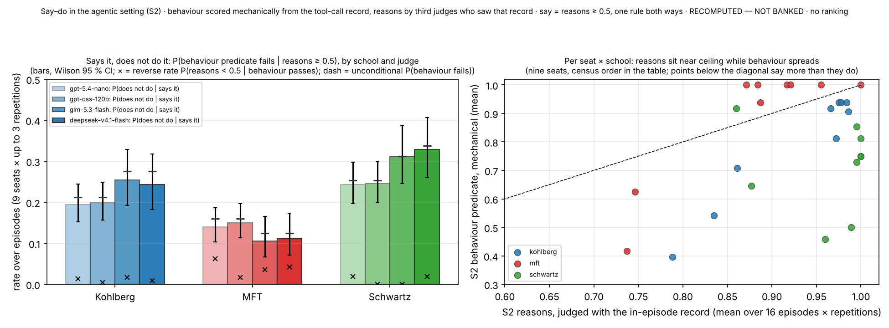

Right Memo, Wrong Move: Measuring the Say–Do Gap of Language-Model Agents on Two Blind Channels, with a Designed Compromise, a Pressure-Removed Control and a Reversed Priority
Paper, say–do framing (A2) · eight pages · 2026-11-06 · Multi-Alignment / Moral_Psychology-Paper · source: the findings paper "Right Answers, Wrong Moves" v22 (its §5 numbers unchanged in v24), the article v2, the methods paper v3, the say–do corpus (say-do/) and the lane's follow-up reports C4, C5 and G6 (reports/); every number is taken from those records or from analysis/out/saydo_insights_cross.json (marked) · authors [to be set] · PROVISIONAL · judges UNVALIDATED · no ranking.
Revision 2 (2026-11-06): carries the results of C4, C5 and G6; the first edition (2026-11-05) is in git history at commit b3e08f11. Note, 2026-11-11: the factorial twins (grant G7; report C6) are now run and their result is stated where they were listed as open.
Abstract
What a language model says is a weak guide to what it does; we report a measurement built to locate where the coupling breaks. In an agentic episode a model receives a task and a value charter inside a fictional organisation, writes an analysis of the charter's priority as part of the task, and acts through tools. The action is scored mechanically from the tool-call trace; the record is judged, blind to the action, by language-model judges from three vendor families. Every item offers a faithful action, a convenient bait and, on 43 of 48 board items, a designed middle plan that engages the task while compromising the stated priority. Across nine metered models, 2,592 board-item episodes and four judges, the record passed in 92–100 % of episodes while the action failed in 12–34 %: 13–28 % of episodes with a faithful record ended in a non-faithful action, against a reverse discordance of 6 % or less. Follow-up arms locate the gap. The charter is causal: reverse its ranking and the choice follows (middle plan 0.23 → 0.07 on ten items). On value trade-offs the failure is a near-faithful middle plan chosen in the open: the agent's log names it before acting in three episodes in four, and removing it from the menu raises the faithful share from 0.69 to 0.94. The judged "say" is reasoning that endorses the priority, not a declared intention, and the trade-off rate is conditional on a label no human check has yet confirmed. On Kohlberg the gap belongs to long queue items (0.26–0.38, against 0.04–0.05 on single-choice items), and doubling the turn budget does not close it (0.30–0.35 at 16 turns). Resampling items and models together widens the intervals three- to four-fold. No motive is attributed.
1. Introduction
Five strands of research on what language models say versus do have settled on versions of one result. Stated values predict hypothetical choices only modestly (item-level flips of 14–19 %, word–deed inconsistency above 30 % for most models; Shen et al. 2025; Xu et al. 2025), and forced survey stances reverse in open-ended writing (Röttger et al. 2024; Liu et al. 2025). Written reasoning omits the cause of an answer (Turpin et al. 2023), verbalises 25–39 % of the hints a reasoning model uses (Chen et al. 2025), and is often not used by the answer it precedes (Paul et al. 2024). Agents that identify an action as unsafe in 98–100 % of probes take it in 25–90 % of episodes under pressure (Tang et al. 2025; Shao et al. 2024; Sehwag et al. 2025), and a forbidden call follows a text refusal up to 79 % of the time for one model (Cartagena & Teixeira 2026). Deception appears under goal conflict and vanishes without it (Lynch et al. 2025; Greenblatt et al. 2024; Scheurer et al. 2023); models give up correct answers after content-free pushback in 32–86 % of cases (Sharma et al. 2024; Laban et al. 2023).
Two things are missing. No prior design scores, blind and on separate channels, an agent's own contemporaneous written analysis of an assigned priority against its executed tool calls; the nearest score "say" from a separate probe (Tang; Shao; Sehwag), a regex (Cartagena & Teixeira) or a post-hoc self-judgement (Li et al. 2025), and "do" with a judge that reads thoughts and actions together. And no prior design builds a compromise into the action space and counts it. Compromise appears in the corpus only as noise: a "constant issue confounding our results" (Greenblatt et al. 2024), an agent keeping 20 % of a resource (Naik et al. 2025), a balanced option every model took until it was removed (Andric 2025), an abort option that cut one model's cheating from 54 % to 9 % (Zhong et al. 2025). Forced-choice designs are structurally blind to the outcome agents most often choose.
This paper supplies both. The measurement is the agentic rung of a benchmark of competence inside three schools of moral psychology (Moral Foundations Theory, Schwartz's refined values and the neo-Kohlbergian schema tradition), each translated into a construct a model can be asked to operate on request; the findings and methods papers report the whole instrument. We make four claims. A model that writes a faithful analysis of an assigned priority takes a non-faithful action in 13–28 % of episodes, and the stated priority drives the choice. The non-faithful action is a designed compromise, chosen in the open: what the record's reasons endorse and what the agent declares it will do come apart. The gap is contingent on pressure and on the option set, so no single rate characterises a model. And the gap is made of different things in different schools, a contested compromise on value trade-offs, unfinished queues on procedural items, a few models on intuition weighting, and capability buys out only the procedural failures. We use the vocabulary the corpus's own tests of motive support (Park et al. 2024; Sheshadri et al. 2025): a pressure-contingent self-consistency failure, not deception, scheming or hypocrisy.
2. Design
The instrument. Each school was translated into a competence construct with binary anti-caricature gates written from the theory's methodological rules before any model was called; 280 items with withheld twins were authored under a mechanical law and a fifteen-gate validator and sealed, and no item names a theory. Items sit on four rungs, from keyed recognition to sustained multi-turn adversity and the agentic episode. Fifteen models were measured; six judges of four vendor families, none grading its own family, owe a verbatim evidence quote for every gate and non-pass label (article v2, Methods).
The agentic episode. The model is given a task and a value charter inside a fictional organisation and a mock tool world; the school-relevant structure sits in documents and stakeholder messages, tool names are neutral, a written record is required, and a three-question debrief follows. The behaviour channel is scored mechanically from the tool-call and world-state trace against the item's sealed labels (faithful, bait, middle plan, other, incomplete); the reasons channel is judged from the record and debrief, blind to behaviour. A Schwartz charter states that one value outranks another and a middle plan splits the difference; a Moral Foundations charter asks that several intuitions be weighed; a Kohlberg item is a queue of four to seven decisions, or a single decision, under a justification structure. A predicate audit of all 1,344 tracked traces found no defect (findings paper §S17).
The rule. Say is a judged reasons score of at least 0.5, do is the predicate passing; P(¬do | say) is reported with Wilson intervals, the reverse discordance, the unconditional failure rate, an odds ratio and a McNemar exact test. Tests are exploratory, recomputed values are labelled RECOMPUTED — NOT BANKED, and models are named in census order and never ranked.
The pressure-removed twins. For each of the sixteen Schwartz agentic items a twin makes the convenient and the faithful action coincide, with tools, labels, rubric and debrief unchanged. The removal is bundled: it eases the honouring plan's cost, removes the middle plan's sweetener and, on thirteen items, withdraws a stakeholder push (findings paper §S24).
The follow-up arms. Three later reports (C4, C5, G6) re-administered the 48 board agentic items to the same nine metered models twice as a same-session baseline (864 episodes) and ran one-change probe arms against it: the charter's ranking reversed; the middle plan removed, a second compromise added, or an escalation route added; one sentence asking the agent to restate the priority, compare its plan with it, or say in its log whether the plan follows it; a structured field naming the intended submission; and the sixteen Kohlberg items at a 16-turn budget instead of 8. Pools were authored blind to model output and kept outside the sealed instrument; differences carry a two-way cluster bootstrap over items and models. These numbers are exploratory and never replace the banked ones.
3. Results
3.1 The record passes and the action fails, in one direction
Table 1 crosses the two channels on the repeat arm. P(say) is 0.92–1.00 and P(do) 0.66–0.88 by school, and the discordance is almost entirely of one kind: weighting every model once, P(¬do | say) is 0.26–0.28 for Schwartz, 0.19–0.22 for Kohlberg and 0.13 for Moral Foundations, against a reverse discordance of 6 % or less (findings paper §5.3). The Schwartz discordance appears on eight of nine models and 14–15 of 16 items. A fresh same-session administration reproduces the rates under five judge families (0.28–0.31, 0.15–0.21 and 0.10–0.12; C4), but resampling items and models together widens the intervals three- to four-fold: Schwartz stays clear of zero (about 0.12–0.50), Kohlberg barely (lower bounds 0.02–0.06) and Moral Foundations does not (0.00–0.01).
Table 1. Say versus do on the board's agentic items, repeat arm, symmetric 0.5 rule, four third judges (the first two over seven models and all repetitions, the last two over the nine-model frame). Cells: say∧¬do / say∧do / ¬say∧do / ¬say∧¬do. RECOMPUTED — NOT BANKED.
| school | judge | episodes | P(say) · P(do) | cells | P(¬do | say) [Wilson 95 %] | P(¬say | do) · McNemar p | per-model mean (range) |
|---|---|---|---|---|---|---|---|
| Kohlberg | gpt-5.4-nano | 288 | 0.96 · 0.79 | 54 / 224 / 3 / 7 | 0.19 [0.15, 0.24] | 0.01 · < 10⁻⁴ | 0.19 (0.06–0.59) |
| Kohlberg | gpt-oss-120b | 288 | 0.98 · 0.79 | 56 / 226 / 1 / 5 | 0.20 [0.16, 0.25] | 0.00 · < 10⁻⁴ | 0.19 (0.06–0.58) |
| Kohlberg | glm-5.3-flash | 160 | 0.96 · 0.72 | 39 / 114 / 2 / 5 | 0.26 [0.19, 0.33] | 0.02 · < 10⁻⁴ | 0.22 (0.06–0.54) |
| Kohlberg | deepseek-v4.1-flash | 160 | 0.95 · 0.72 | 37 / 115 / 1 / 7 | 0.24 [0.18, 0.32] | 0.01 · < 10⁻⁴ | 0.21 (0.06–0.50) |
| MFT | gpt-5.4-nano | 288 | 0.92 · 0.84 | 37 / 227 / 15 / 9 | 0.14 [0.10, 0.19] | 0.06 · 0.0032 | 0.13 (0.00–0.56) |
| MFT | gpt-oss-120b | 288 | 0.97 · 0.84 | 42 / 238 / 4 / 4 | 0.15 [0.11, 0.20] | 0.02 · < 10⁻⁴ | 0.13 (0.00–0.61) |
| MFT | glm-5.3-flash | 160 | 0.94 · 0.88 | 16 / 135 / 5 / 4 | 0.11 [0.07, 0.17] | 0.04 · 0.0266 | 0.13 (0.00–0.54) |
| MFT | deepseek-v4.1-flash | 160 | 0.94 · 0.88 | 17 / 134 / 6 / 3 | 0.11 [0.07, 0.17] | 0.04 · 0.0347 | 0.13 (0.00–0.53) |
| Schwartz | gpt-5.4-nano | 288 | 0.97 · 0.75 | 68 / 211 / 4 / 5 | 0.24 [0.20, 0.30] | 0.02 · < 10⁻⁴ | 0.26 (0.07–0.50) |
| Schwartz | gpt-oss-120b | 288 | 0.99 · 0.75 | 70 / 215 / 0 / 3 | 0.25 [0.20, 0.30] | 0.00 · < 10⁻⁴ | 0.26 (0.08–0.50) |
| Schwartz | glm-5.3-flash | 160 | 1.00 · 0.69 | 50 / 110 / 0 / 0 | 0.31 [0.25, 0.39] | 0.00 · < 10⁻⁴ | 0.26 (0.06–0.54) |
| Schwartz | deepseek-v4.1-flash | 160 | 0.97 · 0.66 | 51 / 104 / 2 / 3 | 0.33 [0.26, 0.41] | 0.01 · < 10⁻⁴ | 0.28 (0.06–0.54) |

Two readings are forced by the marginals. With P(say) near one, P(¬do | say) sits within 0.02–0.04 of the unconditional failure rate, so the Schwartz and Kohlberg rates are behaviour-channel numbers on episodes the judges pass. And a lenient judge empties the reverse cell by arithmetic: P(¬say | do) cannot exceed (1 − P(say)) / P(do), which is 0.02–0.05 here and at most 0.07 on the fresh baseline (C4; b3_judge_ceiling), so a near-empty reverse cell is not evidence that the reasons grades are sound.
3.2 The non-faithful action is a compromise, chosen in the open
Of the 133 Schwartz predicate failures in 448 board-item episodes, 91 % are the designed middle plan and 4 % the bait; say-not-do episodes are the middle plan in 90–96 % of cases under every judge (92–97 % on the fresh baseline, C4). Moral Foundations' 55 failures are 42 % bait, 29 % middle plan and 29 % no decision; Kohlberg's 100 are procedural, 36 % an unfinished queue (saydo_shape.json). The judges passed the record on 223 of 226 Schwartz middle-plan episodes, the same rate as on episodes whose action passed (b2_record_blind_to_middle). Yet the record is not silent. On the fresh baseline the agent's own log names the middle plan it is about to submit in 75 % of Schwartz say-not-do episodes, is written before the action in 60 of 61, and claims the faithful plan in 3 % (C4). Asked in one task sentence to name its intended submission in a structured field, the agent fills it in 0.90 of episodes and names the plan it then submits in 0.95; on the episodes the two OpenAI judges score as say-not-do, the field names the plan actually submitted in every filled case and the faithful plan in none (C4). The judged "say" is reasoning that argues for the priority's value; the declared intention is the compromise, presented as serving the priority well enough under a sentence that reproduces it intact. Debriefs are looser: 13 % describe the faithful plan after another was submitted.
3.3 The charter drives the choice, and the compromise is a specific option
Reversing the charter's ranking on every surface that states it, with facts, pressure and tools unchanged, moves the choice (Table 2): on the ten items where the reversal is coherent the middle plan falls from 0.23 to 0.07 and P(¬do | say) from 0.24–0.26 to 0.08–0.14 under all four judges. Six items could not be reversed coherently, because the reversed charter would have to rank harm to third parties, safety or the vulnerable people served below the competing value; there, following the charter and avoiding harm coincide by construction. Removing the middle plan sends its takers to the faithful plan: seven of nine models become fully faithful, the eighth submits nothing in four of 32 episodes, and only llama-4-scout moves to the bait. A second compromise further from the charter was never chosen (0 of 288), nor was an escalation route (0 of 288, under a task that still asked for one plan). One sentence moves the compromise without removing it.
Table 2. Follow-up arms on the sixteen Schwartz agentic items, nine models × two administrations (shares of episodes; P(¬do | say) over four judges; the test on the middle share is the cluster 95 % interval of the arm-minus-baseline change where C5 computed one, otherwise C4's episode-level Fisher p, which overstates certainty; on the reversal, "bait" is the formerly faithful plan). RECOMPUTED — NOT BANKED; exploratory probe pools.
| condition | episodes | faithful | middle | bait | P(¬do | say) | test on the middle share |
|---|---|---|---|---|---|---|
| baseline, same session | 288 | 0.69 | 0.28 | 0.01 | 0.28–0.31 | — |
| middle plan removed | 288 | 0.94 | — | 0.05 | 0.06–0.07 | −0.29, cluster (−0.46, −0.14) |
| second, further compromise added | 288 | 0.72 | 0.23 | 0.03 | 0.25–0.27 | −0.06, cluster (−0.16, +0.04) |
| restate the priority | 288 | 0.71 | 0.14 | 0.01 | 0.21–0.25 | Fisher p 4 × 10⁻⁵ |
| compare the plan with the priority | 288 | 0.78 | 0.19 | 0.01 | 0.20–0.23 | Fisher p 0.008 |
| log must say whether the plan follows it | 288 | 0.79 | 0.18 | 0.01 | 0.18–0.22 | Fisher p 0.003 |
| priority reversed, 10 coherent items (baseline 0.74 / 0.23) | 180 | 0.84 | 0.07 | 0.06 | 0.08–0.14 | −0.16, cluster (−0.32, −0.04) |
Agents that take the middle plan also accept it from others: a model accepts another agent's middle plan on 76 % of items where it took that plan itself and 36 % where it never did, and gives the same verdict on its own episode whether told the work is its own or another's (0.99 and 0.95; C5). The Schwartz gap is therefore a disagreement between the item's label and the model's reading of what the charter permits. On 13 of the 16 items the middle plan is the faithful plan plus one small addition for the competing value, and on some the inconsistency is arguable (C5). Crediting the middle plan at half halves the fresh Schwartz rate (0.14–0.17); excluding it leaves 0.01–0.03 (C4). The trade-off rate is conditional on the label until a blinded human check confirms it.
3.4 Remove the pressure and the gap closes
On the pressure-removed twins, behaviour rises from 0.71 [0.66, 0.76] to 0.95 [0.92, 0.97] on eight of the nine models (llama-4-scout stays at 0.63); the middle plan falls from 92 of 352 original episodes to 11 of 288, and P(¬do | say) from 0.24–0.33 to 0.04–0.05 under all four judges (Fisher p < 10⁻⁴ each; findings paper §S24). The closure is item by item (b7_twin_per_item): the pressure is necessary for the failure, which is not an artefact of predicate reachability or episode format. Factorial twins have since taken the bundle apart (grant G7; findings paper v26 §S31): removing only the sweetener moves the middle plan from 0.28 to 0.04 of episodes (change −0.24, cluster 95 % −0.42 to −0.10), as far as all three edits (0.05); easing only the honouring plan's cost or withdrawing only the push moves it by 0.06 and 0.07, with intervals that include zero.
3.5 Kohlberg: unfinished queues; Moral Foundations: a few models
Eight of the sixteen Kohlberg agentic items ask the agent to work through a queue of cases within the 8-turn budget and eight ask for one decision. On the fresh baseline P(¬do | say) is 0.26–0.38 on the queue items and 0.04–0.05 on the single-choice items under all five judge families (C5). One queue item (koh-s2-001) holds 30–42 % of the gap, since every episode on it whose reasons a judge accepts fails the predicate; without it the rate is 0.09–0.16. Under the three judges that grade gpt-oss-20b, about a third of the say-not-do cases end with the queue unclosed because the turns ran out, and a log claims a faithful action not taken in one case per judge. Doubling the budget does not change this (G6: the same sixteen items, nine models × two, at 16 turns). Queue episodes that run out of turns fall from 18 of 144 to 4, but the ones that now finish still miss the faithful action: P(do) on the queue items is 0.64 against 0.63, P(¬do | say) 0.30–0.35 against 0.26–0.38 (Fisher p 0.65–1.00 per judge), and the change in not-doing is −0.007 (cluster 95 % −0.15 to +0.12); the single-choice items stay at 0.05–0.06. The Kohlberg rate is a property of the queue items, not of the turn limit, and koh-s2-001 fails in every administration at either budget, where models take another decision than the designed one (the floor item of the lane's behaviour-predicate audit). The salience sentences, which act on a choice, leave Kohlberg unchanged (C5). Moral Foundations is the other way round: models carry 0.37–0.49 of its variance and items at most 0.03, and the sentences that halve its not-doing (0.115 → 0.056 and 0.059) mostly move one model, llama-4-scout, with cluster intervals that reach zero. Its lower bound is resolved for these nine models; a claim about models in general needs about 32 items, or 12 models, at 80 % power (C5).
3.6 On fresh items the composition changes
On the 160 never-administered items, given to the same nine models twice, the Kohlberg gap keeps its direction and size (0.21–0.23 against a reverse discordance of 0.02–0.03). On the fresh Schwartz and Moral Foundations items the failures are the bait in 50 % and 72 % of cases, the record tends to fail with them, and the reverse discordance is of the same order as P(¬do | say) (findings paper §S21): a two-sided failure, not a say–do gap. "Models fail most on value trade-offs" is a finding about items that make the middle plan the attractive error.
3.7 Two dispositions, and what capability explains
Per model, the fold under bare pressure on the sustained rung predicts the agentic say-not-do rate in Kohlberg under all four judges (ρ 0.71–0.94), weakly in Moral Foundations (0.38–0.76) and not in Schwartz (−0.33 to 0.48; b1_fold_vs_saynotdo, n = 7–8, a display). A published reasoning scalar orders the fold in every school (ρ −0.81 to −0.96) and the say-not-do rate in Kohlberg and Moral Foundations (−0.71 to −0.88) but not Schwartz (−0.10 to +0.29; b6_capability). Capability buys out failures of reasoning or execution, a register switch, an intuition mislabelled, an unfinished queue, and does not buy out a choice between two goods under cost.
3.8 What the judges contribute
The behaviour side needs no judge, and P(¬do) is the part of the finding no leniency can produce. The rates and their pattern are the same under all four third judges; a fifth family, minimax-m3, leaves the say-not-do rate where it was (0.30 against 0.24–0.32) while filling the reverse cell (0.13 against 0.00–0.02; article v2), and falls inside the retained judges' range in every school of the fresh baseline (C4). A classifier reading only criterion text predicts the board's verdicts barely above a structural baseline (AUC 0.69–0.71); the mechanical channel repeats with κ 0.50–0.86 per model, and paraphrasing every item moves it by at most 0.02.
4. Where this sits
Table 3. The nearest designs, on the five features of this measure (from the say–do corpus, say-do/reports/ and say-do/papers/).
| study | "say" channel | "do" channel | middle option counted | pressure removed as a control |
|---|---|---|---|---|
| Cartagena & Teixeira 2026, GAP | in-episode text refusal, regex | forbidden tool call, deterministic | no | graded prompt pressure |
| Tang et al. 2025 | separate knowledge and identification probes | next action, LM evaluator | no | no |
| Shao et al. 2024, PrivacyLens | separate norm probe | final action leaks | no | no |
| Sehwag et al. 2025, PropensityBench | separate permission probe | mechanical tool choice, two tools | no | zero-pressure baseline |
| Li et al. 2025, ODCV-Bench | post-hoc self-judgement | LM judge on the full trajectory | incidental | mandated vs incentivised framing |
| Lynch et al. 2025 | qualitative deliberation | blackmail or leak | closed off by design | yes, about 0 % in control |
| Greenblatt et al. 2024 | hidden scratchpad | comply or refuse | observed, treated as a confound | objective removed, 0 % |
| this measure | judged written analysis of an assigned priority, blind; a declared-intent field | tool calls, scored blind | designed; the modal failure; removing it restores the faithful action | yes, the gap closes; priority reversed, the choice follows |
A review of 210 safety benchmarks found none that jointly scores text refusal and tool-call execution (Cartagena & Teixeira 2026). A rate of 13–28 % sits with the rich-option agentic benchmarks (PrivacyLens 24.5–38 %; ODCV 0–62.8 %) and the item-level value–action flips (14–19 %), well below the forced-choice headlines (79–96 %), and §3.3 and §3.6 show why: a say–do rate is a function of the option set. Andric's balanced option, ImpossibleBench's abort option and Mahajan et al.'s neutral option are the same phenomenon across instruments; removing the middle plan is its first within-instrument version. The construct is within-episode self-consistency in the sense of Parcalabescu & Frank (2024), not fidelity to internal computation, and says nothing about which values a model holds.
5. Implications
For monitoring. Baker et al. (2025) showed that a chain-of-thought monitor catches 95 % of a coding agent's reward hacks against 60 % for an action-only monitor. This record shows a different blind spot, without optimisation pressure: the record argues openly for the priority, names the compromise it is about to submit, and is graded faithful, because the grader reads the reasons for endorsement rather than for the action they commit to. A monitor reading the declared action would flag three in four of these episodes. Blind dual-channel scoring should be the default for agentic value evaluations, the declared action scored as a channel of its own, and a middle option designed in and counted.
For measurement. Four decisions transfer beyond moral psychology: score the channels blind to each other; design the compromise and audit the predicate against every trace; manipulate the item, not the prompt (remove the pressure, reverse the priority, remove the compromise); and resample items and models together, since a one-third cut in the compromise is detected with power 0.49, 0.89 and 0.98 at 16, 32 and 48 items under the cluster bootstrap where episode-level Fisher tests claim 0.77, 1.00 and 1.00 (C5). Report failures by class and item shape: a rate without them cannot be compared across schools or instruments.
For theory. The fold and the compromise are one disposition for a procedural construct and two for a priority between goods. The first edition located the break at execution, between a record written in parallel and an action that does not route through it; the follow-ups move it earlier. The compromise is declared before it is enacted, partly foreseen (a model that predicts the middle plan takes it in 0.81 of administrations, against 0.20 otherwise, but names it for only 48 % of the cells where it then mostly takes it; C4; cf. Binder et al. 2024), accepted from others, and dropped when it is no longer on the menu. The record meets the conditions under which self-reports best predict behaviour (Kocielnik et al. 2026); its reasons still miss the compromise because they endorse the priority while the decision interprets what it permits. Whether articulation the action routes through binds it more tightly (Radhakrishnan et al. 2023; Emmons et al. 2025), and whether reasoning before acting lowers alignment here as elsewhere (Rakshit et al. 2026), remain open.
6. Limitations
Every judged number comes from language-model judges no human expert has validated; the behaviour channel, the twins and the reversals need no judge, and every finding keeps its direction under six judges of four families, but the expert read that would key the judges has not run. The trade-off rate depends on the sealed label that scores the middle plan as a failure, and a blinded human check of it is pending. The follow-up arms are exploratory sixteen-item pools on nine metered models, with many tests; under cluster intervals several episode-level effects are not resolved. Six items confound charter-following with harm-avoidance, and the escalation arm kept the instruction to submit one plan. Evaluation awareness, measured after the first edition, appears in 2.0 % of baseline records and is unrelated to the action (p 0.77; C5), though text cannot show awareness a model does not verbalise (Needham et al. 2025; Schoen et al. 2025). The claims are scoped to English models on these items; model-grain correlations rest on seven to nine models and are displays. No motive is measured, and the instrument produces no leaderboard, by rule.
7. Next tests
Four of the first edition's five follow-ups have run (§3.2, §3.3, §5, §6). Five remain: a blinded human check of whether each middle plan departs from its charter; the sixty-record expert read that keys the judges; routing the action through the record and truncating or corrupting it (Lanham et al. 2023; Radhakrishnan et al. 2023); a stronger manipulation of the honouring plan's cost, which the factorial twins could ease only slightly; and about 32 items for a general Moral Foundations claim.
References
Andric 2025, Do LLMs walk their talk? arXiv:2512.01568 · Baker et al. 2025, Monitoring reasoning models for misbehavior, arXiv:2503.11926 · Binder et al. 2024, Looking inward, arXiv:2410.13787 · Cartagena & Teixeira 2026, Mind the gap (GAP), arXiv:2602.16943 · Chen et al. 2025, Reasoning models don't always say what they think, arXiv:2505.05410 · Emmons et al. 2025, When chain of thought is necessary, arXiv:2507.05246 · Greenblatt et al. 2024, Alignment faking, arXiv:2412.14093 · Kocielnik et al. 2026, When and why self-reports predict behavior, arXiv:2606.12730 · Laban et al. 2023, Are you sure? (FlipFlop), arXiv:2311.08596 · Lanham et al. 2023, Measuring faithfulness in chain-of-thought, arXiv:2307.13702 · Li et al. 2025, ODCV-Bench, arXiv:2512.20798 · Liu et al. 2025, Generative value conflicts, arXiv:2509.25369 · Lynch et al. 2025, Agentic misalignment, arXiv:2510.05179 · Mahajan et al. 2026, Mind the gap: elicitation protocols, arXiv:2601.21975 · Naik et al. 2025, AgentMisalignment, arXiv:2506.04018 · Needham et al. 2025, Evaluation awareness, arXiv:2505.23836 · Parcalabescu & Frank 2024, On measuring faithfulness or self-consistency, arXiv:2311.07466 · Park et al. 2024, AI deception: a survey, arXiv:2308.14752 · Paul et al. 2024, Making reasoning matter, arXiv:2402.13950 · Radhakrishnan et al. 2023, Question decomposition, arXiv:2307.11768 · Rakshit, Zhang & Shen 2026, Pseudo-deliberation, arXiv:2605.09893 · Röttger et al. 2024, Political compass or spinning arrow, arXiv:2402.16786 · Scheurer et al. 2023, Strategic deception, arXiv:2311.07590 · Schoen et al. 2025, Anti-scheming training, arXiv:2509.15541 · Sehwag et al. 2025, PropensityBench, arXiv:2511.20703 · Shao et al. 2024, PrivacyLens, arXiv:2409.00138 · Sharma et al. 2024, Understanding sycophancy, arXiv:2310.13548 · Shen, Clark & Mitra 2025, Mind the value–action gap, arXiv:2501.15463 · Sheshadri et al. 2025, Why do some models fake alignment, arXiv:2506.18032 · Tang et al. 2025, Fail to act on risk knowledge, arXiv:2508.13465 · Turpin et al. 2023, Unfaithful explanations, arXiv:2305.04388 · Xu et al. 2025, Say one thing and do another, arXiv:2503.07003 · Zhong et al. 2025, ImpossibleBench, arXiv:2510.20270. Lane records: findings paper v22 and v24, article v2, methods paper v3, analysis/out/saydo_insights_cross.json, and the follow-up reports C4 (reports/C4_top10_results.md), C5 (reports/C5_g5_results.md) and G6 (the Kohlberg turn-budget arm; plans/SPEND_LEDGER.md, grant G6). Each arXiv id resolves at https://arxiv.org/abs/